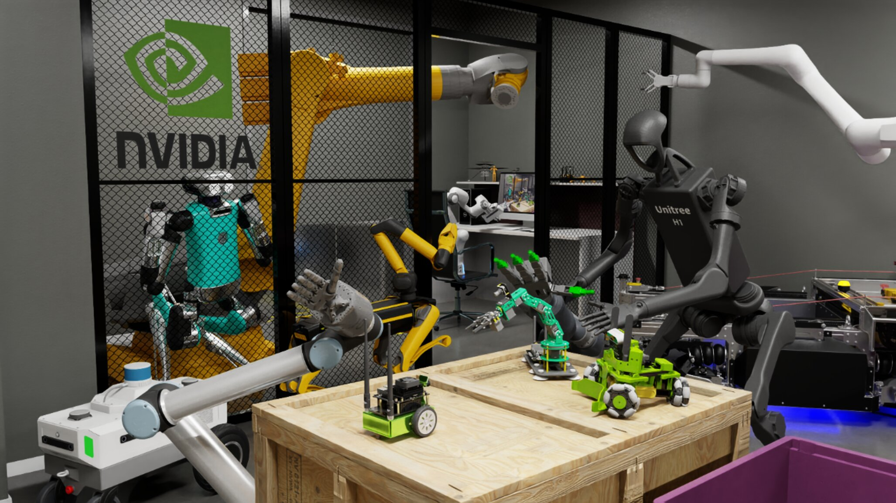
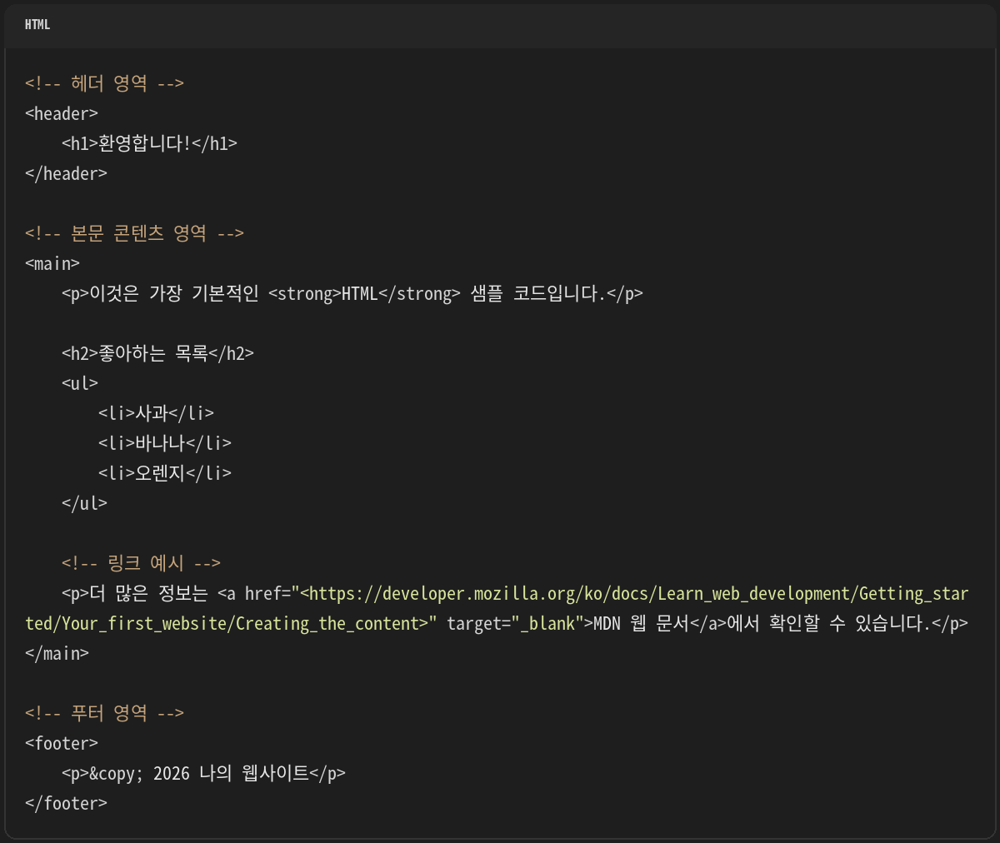
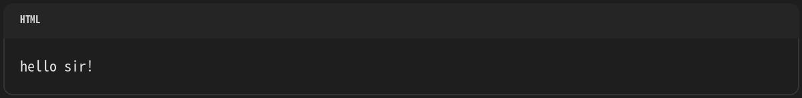
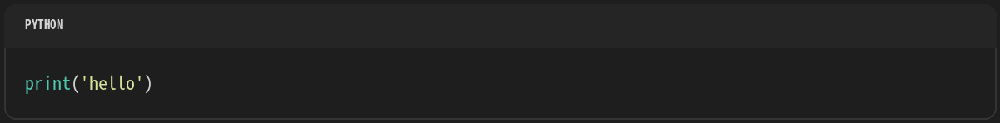
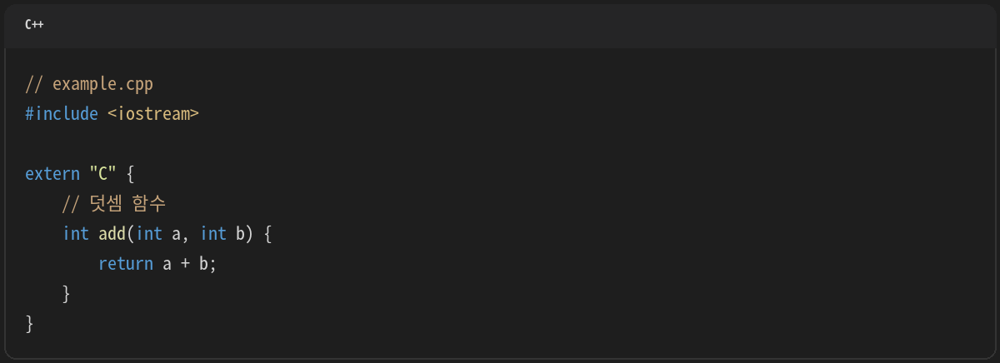
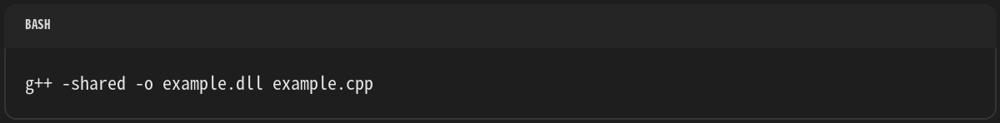
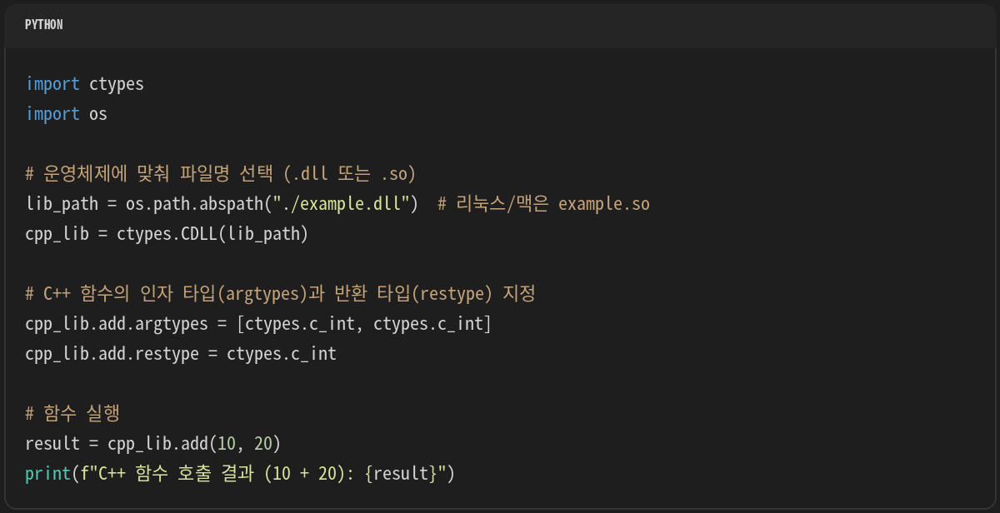

3. 코드/예제
실습한 코드나 예제가 있다면 여기에 추가하세요.

👆 이건 로봇 핸드 움직임 표현입니다.
- 노션의 URL Bookmark 기능을 통해 ‘샘플 이미지’를 볼 수 있고, 누르면 해당 링크로 이동합니다.
💡 샘플입니다. 참고 부탁 드립니다.
- 노션의 Callout 기능을 통해 강조합니다.
- 노션의 Embed PDF 기능을 통해, PDF를 이 페이지에서 읽어볼 수 있습니다.

👆 이건 로봇 모임입니다.

👆 이건 로봇 경쟁입니다.
- 노션의 사진 중첩 기능 덕분에 두 개를 연속으로 볼 수 있습니다.
4. 느낀 점 & 회고
오늘 학습하면서 느낀 점이나 개선할 점을 작성하세요.
ㅅ[셈플링 입니다. 참고
부탁드립니다
감샇바니다.

HTML 코드
5. 참고 자료
- 참고한 문서나 링크
👆 이 사진은 ‘로봇 강화 학습 과정’ 입니다.
테스트 사진 입니다.

HTML 코드

👆 한번 더 ‘로봇 핸드 움직임’을 보여드립니다.

PYTHON 코드

C++ 코드

BASH 코드

PYTHON 코드
로봇 손 테스트 입니다.

👆 이건 ‘찐 마지막 핸드 움직임’ 입니다.